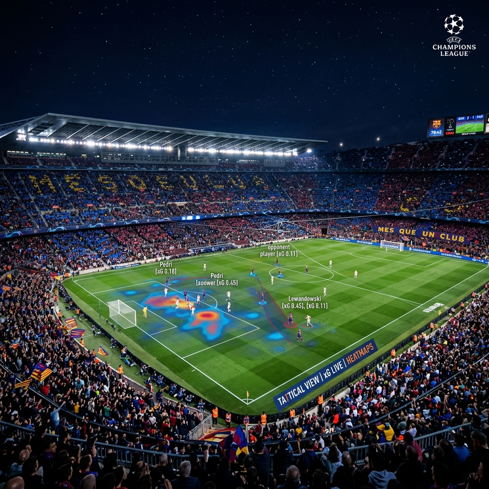

FC Barcelona vs. Newcastle: Monitoring the Champions League Thriller

The UEFA Champions League Round of 16 high-stakes match between FC Barcelona and Newcastle United has captivated football fans globally.
On March 18, 2026, the second leg of this titanic clash took place at the Spotify Camp Nou, an evening that will be remembered for its tactical intensity, clinical finishing, and the sheer unpredictability of knockout European football. For fans and tactical analysts alike, the complexity of this matchup—pitting the historic elegance of Barcelona against the burgeoning, high-intensity machine of Newcastle—meant that a traditional single-screen viewing experience was simply insufficient. To truly capture the nuances of the game, from subtle lineup tweaks to live expected goals (xG) data, a multi-stream intelligence approach was the only way to stay ahead of the action.
Historical Context: From Sir Bobby Robson to the Modern Era
The connection between FC Barcelona and Newcastle United is one of the more unique stories in European football, famously centered around the legendary Sir Bobby Robson. Having managed both clubs with distinction, Robson’s legacy loomed large over this 2026 Round of 16 clash. In the late 90s, Robson led Barcelona to a Cup Winners' Cup, while his tenure at Newcastle is considered the club's "Gilded Age."
Decades later, both clubs find themselves at different but equally critical inflection points. Barcelona is navigating a post-Messi era under the tactical guidance of Xavi, focusing on the development of "La Masia" gems like Lamine Yamal and Pau Cubarsí. Conversely, Newcastle United has transitioned from a club struggling for Premier League survival to an elite European powerhouse, backed by strategic investment and the meticulous coaching of Eddie Howe. This match wasn't just about a 90-minute result; it was a collision of two distinct footballing philosophies and two proud fanbases aiming to reclaim their spot at the summit of the continent.
Tactical Breakdown: Xavi's Positional Play vs. Howe's High Press
The tactical battle on the pitch was a fascinating watch. Barcelona remained committed to their signature 4-3-3 "Juego de Posicion," focusing on creating passing triangles, stretching the pitch, and utilizing the half-spaces. Xavi’s side aimed to control the tempo, using Pedri and Gavi (returning from injury) to dictate play in the middle of the park. Their objective was clear: maintain possession, tire the opponent, and exploit the individual brilliance of their wide attackers.
Newcastle, however, had different plans. Eddie Howe’s side implemented a relentless, high-intensity press that aimed to disrupt Barcelona's rhythm from the opening whistle. By squeezing the space in the defensive transitions, the Magpies forced uncharacteristic turnovers from the Barcelona backline. Newcastle’s 4-3-3 setup turned into a compact 4-5-1 when out of possession, making it incredibly difficult for Barcelona to play through the center. The ability to monitor this tactical tug-of-war in real-time—watching how the defensive lines compressed and expanded—required access to multiple viewpoints, including tactical cameras that show the entire field's width.
Key Player Battles: Lamine Yamal vs. Lewis Hall
One of the most talked-about individual duels was the battle on the wing between Barcelona’s teenage sensation Lamine Yamal and Newcastle’s versatile fullback Lewis Hall. Yamal, at just 18, displayed a maturity far beyond his years, constantly challenging the Newcastle defense with his direct dribbling and vision. His ability to cut inside and create shooting opportunities forced Newcastle to double-team him, leaving gaps elsewhere.
Lewis Hall, entrusted with one of the most difficult defensive assignments in world football, put in a monumental shift. His recovery pace and tactical awareness were crucial in neutralizing many of Yamal’s progressive runs. For fans using YoutubeMulti, dedicating a specific tile to a player-cam or heat-map for these two individuals allowed for a deeper appreciation of the work rate involved. Seeing the heat map update live as Yamal drifted into the center while Hall tracked back was a highlight for any student of the game.
Real-Time Monitoring with YoutubeMulti: The Ultimate Fan Dashboard
With the speed and complexity of the modern Champions League, you need more than just a 90-minute broadcast. You need a command center. YoutubeMulti allows you to aggregate multiple live feeds into one coherent, professional-grade dashboard. During a high-stakes match like Barcelona vs. Newcastle, the "Multi-Stream Edge" provides total situational awareness.
Step-by-Step Setup for CL Matchdays
- Main Tile: The primary 4K broadcast of the match at Spotify Camp Nou.
- Secondary Tile 1: A multi-angle tactical "spider-cam" feed to see player positioning and off-ball movement.
- Secondary Tile 2: Real-time statistics from Opta or SofaScore, tracking xG, tackle success rates, and live passing accuracy.
- Secondary Tile 3: Fan-reaction streams or alternative commentary from popular YouTube creators like Mark Goldbridge or Barcelona-based fan channels for a more emotional perspective.
- Bottom Banner: A live social media feed (X or Reddit) to catch instant news about substitutions, VAR decisions, and global trending topics related to the game.
Future Outlook: The Road to the Quarterfinals
As the dust settles on this Round of 16 encounter, the implications for the rest of the 2026 Champions League season are immense. Barcelona’s victory (or narrow advancement) signifies their re-emergence as a genuine contender, proving that their youth-led project has the mental fortitude to handle elite European pressure. For Newcastle United, regardless of the direct result, the performance cemented their status as a team that belongs on the biggest stage. They have evolved from "intruders" to "mainstays," and their physical, disciplined style will be a blueprint for other aspiring clubs.
The quarterfinals will bring even more formidable opponents—the likes of Real Madrid, Manchester City, and Bayern Munich await. To stay informed during those even higher-stakes matches, the need for a comprehensive, multi-screen intelligence setup will only grow. The era of passive viewing is over; the era of interactive, multi-dimensional football monitoring has arrived.
Conclusion: The Evolution of the Fan Experience
The 2026 clash between FC Barcelona and Newcastle United was a landmark event that showed exactly why we love the Champions League. It was a test of skill, endurance, and tactical wit. By utilizing tools like YoutubeMulti, fans can now elevate their experience from simple observation to true tactical immersion. Don't just watch the next thriller; monitor it, analyze it, and experience every frame-by-frame detail of the beautiful game.